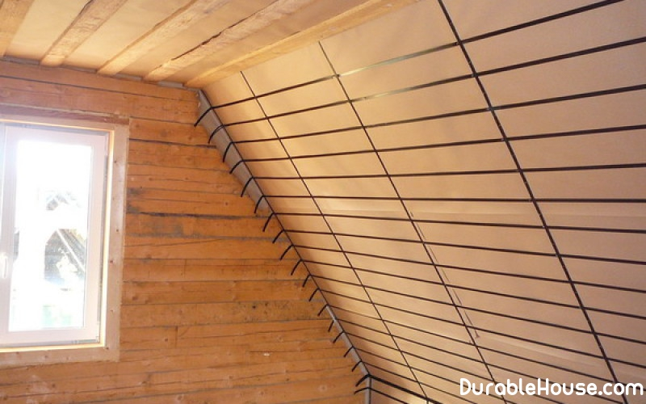

Mansard insulation
The attic floor is most exposed to heat losses. It is not only the impact of moisture from above during rain and snow, but also from below: because of the temperature difference the moisture contained in the air condenses on the inner surface of the roof. With time the roof begins to collapse. Correct installation will help avoid such problems "Roofing pie".
First, a vapor barrier layer is placed to prevent movement warm moist air from living quarters to tiles. The vapor barrier film is attached to the rafters with thin wooden slats. If foil materials are used, they folded metal side inside the room - a shiny surface of aluminum the foil reflects thermal radiation, reducing heat loss. It should be remembered that between vapor barrier and internal cladding it is desirable to leave a small gap.
On top of the insulated heater: stone wool, glass wool or extruded expanded polystyrene. A warmer between rafters is best fixed using twine, so that it does not lie on the film. Then the windproof film is laid or diffusion membrane. They protect the attic from the wind, moisture from the outside and do not allow to form condensate in the under-roof space. After the regiment is fastened (the second crate), so that the necessary clearance for air circulation remains. The next is the crate, on which tiles or other roofing material is already stacked.
Additional insulation
If the roof already has a layer of insulation, but the room is still cold, additional warming is necessary. There are two ways to do this.
The first is to place the insulation over the existing insulation in compliance with all the rules installation of thermal insulation in the attic. In this case, the height of the ceiling does not decrease, but it is necessary to dismantle the roof and the battens, as well as the structure of the supporting frame for the new roofing.
In the second variant, an additional layer of insulation is located under the existing thermal insulation. For this, on the inner skin of the attic set a frame of wooden beams, between which the insulation is placed and covered with a vapor barrier film. Such the way of warming is not connected with the dismantling of the roof, the work can be done in summer and winter, however, the useful area and height of the room are reduced by about 20 cm. In some cases, the optimal option can be a combined method, when a flat ceiling the attic is insulated over the existing thermal insulation, and its inclined surfaces - from the inside.
Roof covering
Metal tile is easy to install, but it is considered one of the noisiest types of cover. If in mansard it is planned to organize a bedroom or a nursery, it is better to refuse it.
Ceramic tiles have excellent mechanical and physical characteristics, but quite heavy in weight, requires a reinforced rafter system and increases the load on the walls.
Bitumen - a good option for the attic, but when laying requires additional components materials.
Recently a new coating appeared on the market - composite tiles. It is a steel sheets coated with a composition of an alloy of aluminum, zinc and silicon. Outer side tiles covered with colored granules of natural stone, which suppress the sound of rain and wind.
Walls and floors
The loss of heat occurs not only through the roof, but also through the end walls. Therefore, the pediment houses must also be well insulated. Mount thermal insulation materials can be as with the outer side of the wall, and with the inside. It also uses a sandwich from heat-reflecting, vapor barrier film, insulation layer and windproof cover.
At the device of a floor the layer of a heater from two parties is closed by a vapor barrier film that do not allow the penetration of moisture from both the lower floors and the attic.
Windows
Skylights need to have increased reliability. For double-glazed windows is used the glass is broken, it breaks up into small, safe pieces when broken down. Often use triplex - two glasses, between which is a special film, capable of to hold the fragments.